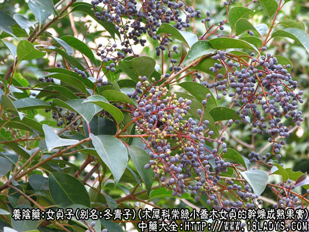
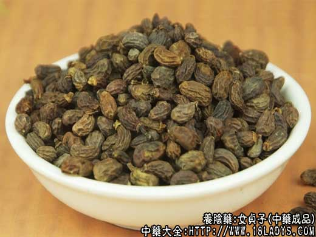
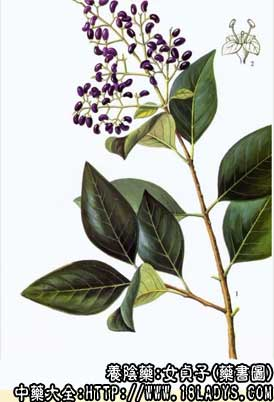

女贞子为常用中药。始载《神农本草经》，列为上品。
别名：冬青子。
来源：为木犀科常绿灌木或小乔木女贞（别名冬青）的干燥成熟果实。多为栽培，亦有野生。
产地：主产于华东、中南以及西南等地区。
性状鉴别：果实呈卵圆形，有的稍弯曲略呈肾形。长5～10毫米，直径3～5毫米。外果皮薄，蓝黑色或棕紫色，多数极皱缩，少数鼓泡状。一端具浅棕色小点状柄痕或带有残存萼片及残柄。剖开后多数为单仁，如为双仁，则由分生的果内皮隔开。中果皮棕色，质松软，多贴附于外果皮上。内果皮木质，略似稻壳，黄色，易纵向剖裂，内含种仁一枚。种仁椭圆形，弯曲，两端略尖，背面隆起，腹面凹入或略平坦，被棕黑色种皮，有纵棱，及凹沟数条。质坚硬，折断面乳白色。气微，味淡微苦涩。以颗粒大、肉厚、蓝黑色者为佳。
主要成分：含齐墩果酸、右旋甘露糖醇、油酸、亚油酸等。
药理作用：
1、强心。与所含的齐墩果酸有关。
2、通便。缓下，与所含的右旋甘露糖醇有关。
3、滋养。与所含的油酸、亚油酸等有关。
此外，近年来的研究还初步发现了女贞子的水浸剂能抑制动物某些移植肿瘤的生长。
炮制：加黄酒蒸后晒干。
性味：甘、苦、平。
归经：入肝、肾经。
功能：滋补肝肾，强腰膝，明耳目，乌须发。
主治：阴虚内热，腰膝酸软，耳聋目暗，须发早白，心悸失眠等症。
临床应用：用于眼科较多。
1、治中心性视网膜炎、早期老年性白内障，有肝肾阴虚表现、视力减退、眼花的患者。配杞子和六味地黄汤，方如网膜炎方。
2、治肾阴虚，头昏目眩、腰膝酸软、肢体乏力、须发早白，常配蕤仁肉，木蝴蝶、菟丝子等，或配旱莲草，方如二至丸。
又据报道，近年来试用女贞子90g、龙葵60g，水煎服，对提高血中白细胞数有一定帮助。
用量：6～15g。
处方举例：网膜炎方：女贞子9g、杞子2g、熟地15g、云苓15g、泽泻9g、丹皮6g、山萸肉9g、淮山药12g，水煎服。
二至丸：女贞子、旱莲草各15g，水煎服。
注：木犀科女贞子，别名冬青子，与冬青树的果实冬青子，属于同名异物，有的地区常相互混淆。
据湖南《药物志》第一辑第21页，附注记载，湖南省以女贞子与冬青子混用，效果同。
浙江《中药手册》第三集第136页注记载，浙江所用女贞子常与冬青的果实相混，实际两者非同科植物，前者干燥的果实呈紫黑色，后者呈紫褐色，颗粒较大。
又据《中药志》第二册35页，附注记载：在四川、湖南地区尚生产一种女贞子，其生药为向一侧弯曲的短圆柱形，常有残留的花萼及果柄，长3～6毫米，直径2～3毫米。表面深棕色，有明显的纵皱，中果皮不发良，种子瘦小，其原植物尚未确定，有待进一步研究。
按《中国高等植物图鉴》介绍：冬青科植物系多种冬青树的果实，为核果，呈类球形，成熟后有红有黑，黑含分核数枚（4枚以上），核壳骨质坚硬，背面有一深沟。按此特征可与女贞子区分。关于其疗效是否相同，尚待研究，不应同称冬青子混淆使用。
关于浙江及湖南介绍的女贞子和冬青子混用情况，因未见商品，尚不知是木犀科女贞的同属植物果实或是冬青科冬青及其同属的果实，均待调查了解。